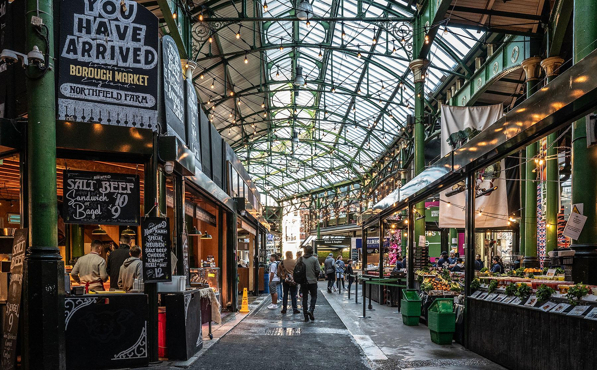
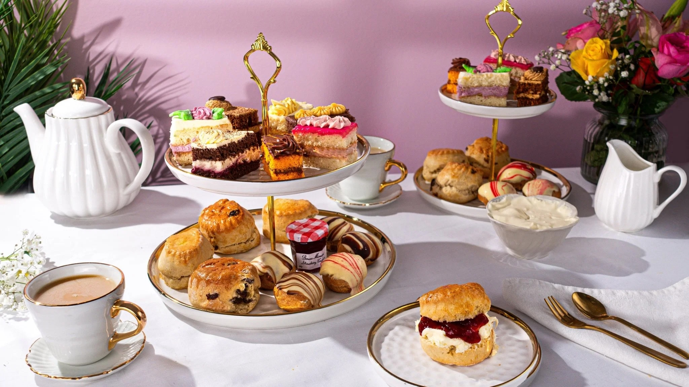
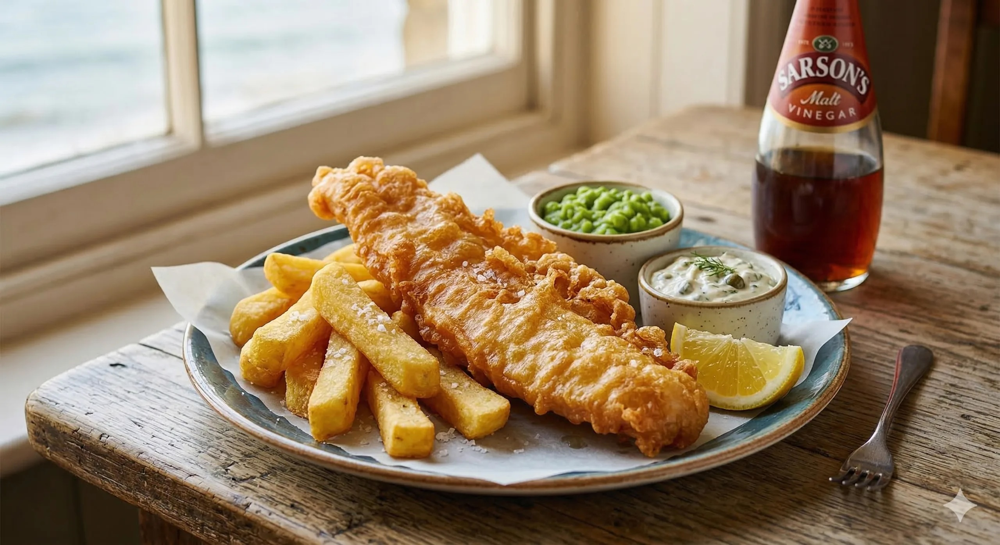
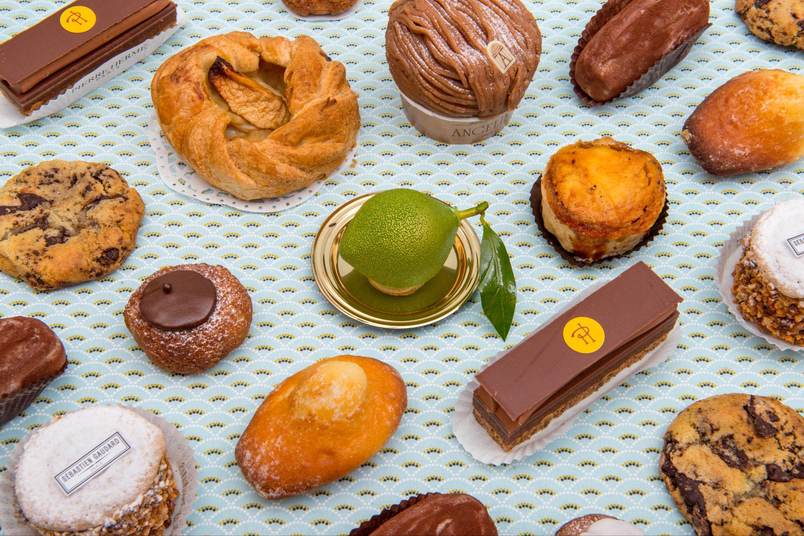
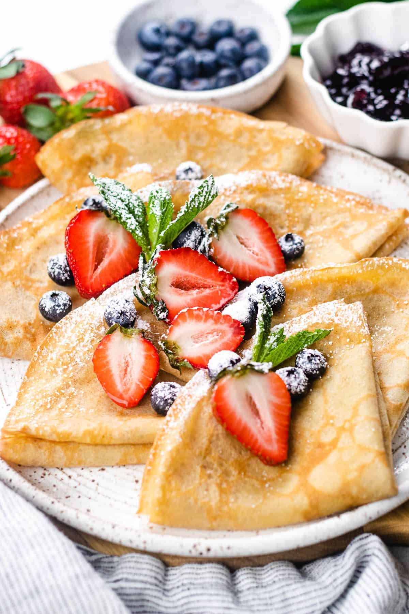
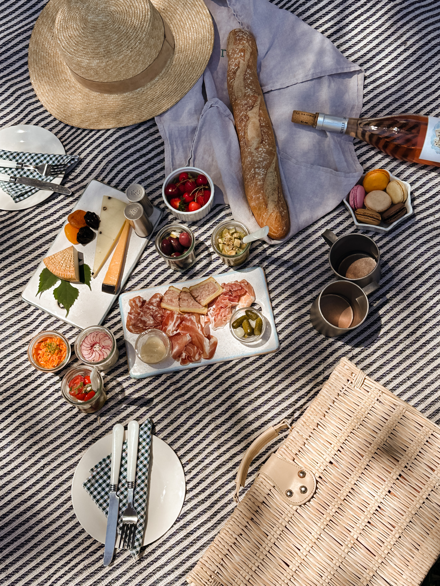
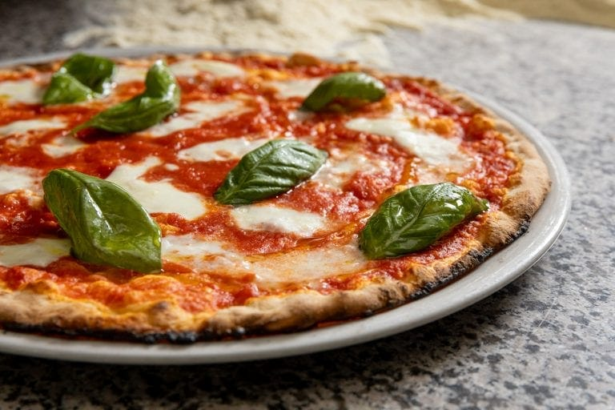
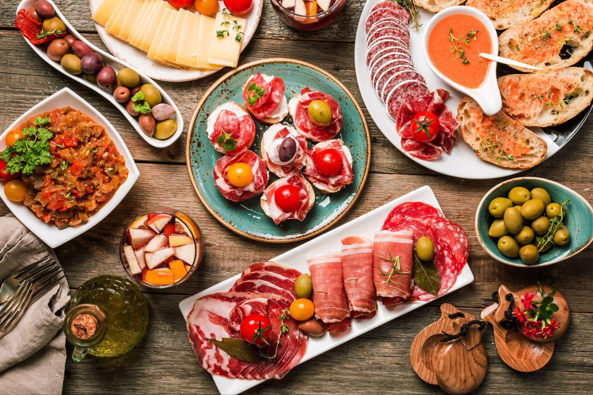
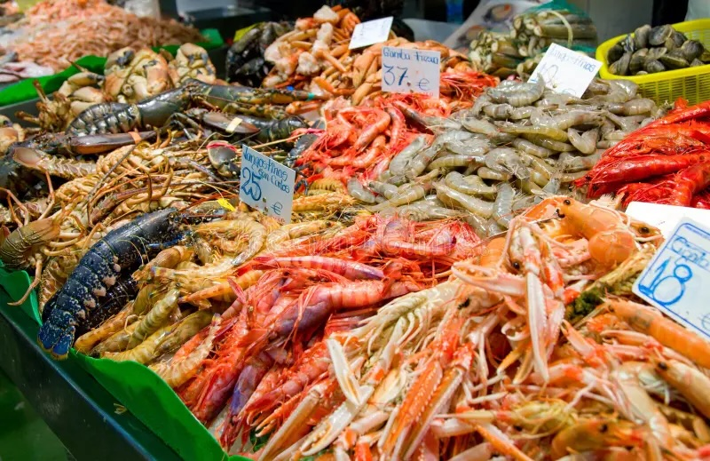
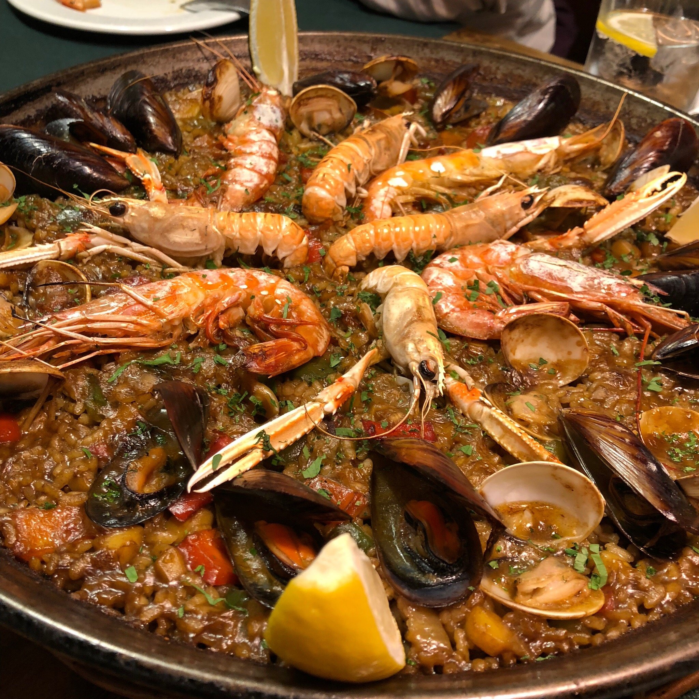

🍽 What We'll Eat Along the Way
A culinary journey through 4 cities · June 16 – July 2, 2026
🇬🇧 London

Dozens of stalls with fresh cheeses, meats, seafood, and produce. One of the world's great food markets.

Scones, finger sandwiches, cakes, pastries with tea or coffee. The quintessential British experience.

Fish & chips, meat pies, bangers & mash — paired with a local ale or bitter at a cozy pub.
🇫🇷 Paris

Buttery croissants, éclairs, macarons, mille-feuille. Ladurée for macarons, Angelina's for hot chocolate.

Sweet and savory — street vendors and sit-down crêperies everywhere. Try Carette or Breizh Café.

Fresh baguettes, cheese, charcuterie, and wine from Rue Cler market — on the lawn at Champ de Mars.
🇮🇹 Rome

Wood-fired, thin and crispy. Try pizza al taglio (by the slice) from a street counter.

Cacio e Pepe, Carbonara, Amatriciana, Gricia — all built on Pecorino Romano, guanciale, and black pepper.

Denser and silkier than ice cream. Best test of a gelateria: the pistachio. Look for natural colors.
🇪🇸 Barcelona

Patatas bravas, croquetas, bombas, boquerones. Eaten standing at a bar counter with cold beer or vermouth.

Arroz negro (black rice with squid ink), grilled dorada, and fresh boquerones straight from the Boqueria.

Traditional Spanish rice dish with saffron, vegetables, and protein — chicken, rabbit, or seafood. Order for the table.